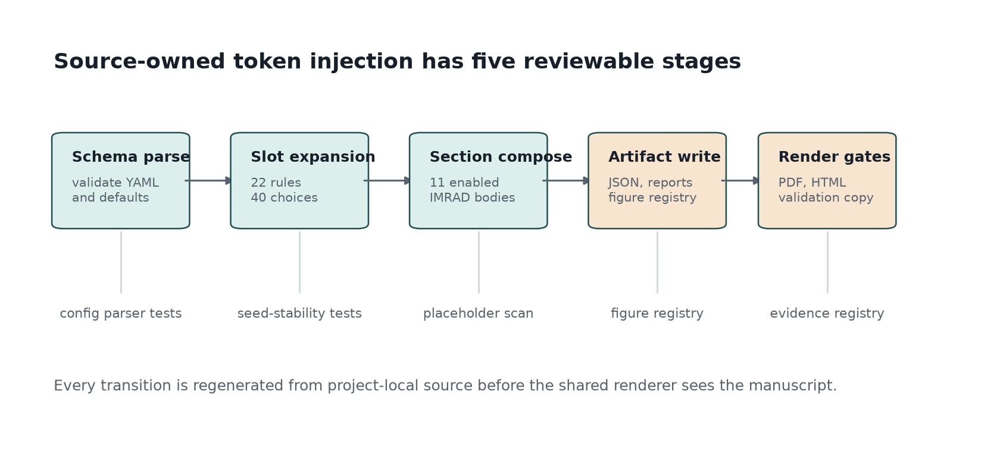

Methods: Source-Owned Token Injection and Conditional IMRAD Assembly
The method is conditional section hydration. Each slot combines the seed, slot name, category, ordinal, and full category list into a SHA-256 digest; the digest indexes the configured category. Including the full category list in the digest input means that a lexicon edit can change the plan in a deterministic and reviewable way instead of silently preserving stale output.
The deterministic digest recipe is deliberately narrow. It does not sample from ambient prose, project history, or renderer state; it uses only the committed seed, the slot declaration, the category name, the ordinal for repeated slots, and the ordered category inventory. A fork can therefore explain a changed token choice as a changed seed, slot, or lexicon row rather than as an opaque generation event.
The first review scenario is declared before generation. The project names its scope as a local exemplar, records enabled sections, keeps DOI and publication claims blank, and treats the copy stage as a review handoff. That ordering matters because a reader should know the allowed claim boundary before inspecting fluent generated text.
The governing constraint is publication claims stay local until
release. The source manuscript is intentionally sparse: it contains
section titles and large-grain placeholders, not generated claims. The
project script first validates the madlib: block, expands
slots into a TokenPlan, builds section bodies, writes
artifact JSON, emits a figure registry, and only then writes hydrated
Markdown under output/manuscript/.
The configured method moves are validate config before composition,
declare review scenario and method invariants, separate explicit YAML
fields from loader defaults, govern lexicon categories as reviewable
data, expand slots through seeded digest selection, allocate slot
choices to enabled manuscript sections, compose conditional section
bodies, assemble method evidence tables and visual audit figures, align
generated claims with the claim ledger, emit evidence artifacts before
rendering, verify that no unresolved placeholders remain, assemble a
reviewer packet from regenerated artifacts, and preserve human review
before publication claims. The protocol sequence is Ingest declared
manuscript schema produces MadlibConfig; Declare review
scenario produces review scenario; Track field origin
produces explicit/default path inventory; Govern lexicon
categories produces validated lexicon; Construct digest
selection material produces digest input records; Record
selection invariants produces selection invariant set;
Expand slot declarations produces TokenPlan; Apply section
conditions produces enabled section set; Compose
conditional IMRAD bodies produces section variables;
Assemble evidence tables produces Markdown evidence tables;
Align claims with evidence ledger produces
claim-aligned evidence surface; Generate visual audit
surface produces registered figure set; Emit
machine-readable artifacts produces
output/data, output/reports, and output/figures; Hydrate
manuscript shell produces output/manuscript; Render and
validate deliverables produces validated project output;
Assemble reviewer packet produces review packet; Copy
review surface produces copied publication-review bundle;
Document fork migration produces fork migration notes.
These steps make the method auditable from three directions: tests
inspect the Python behavior, generated artifacts expose the token plan,
and manuscript validation confirms that no unresolved placeholder
survives into rendered outputs.
The config-origin inventory currently separates 125 explicit YAML path(s) from 11 loader-defaulted path(s). Treating origin as method evidence prevents a rendered field from looking equally authored when it was actually inherited from the loader. The same inventory drives configured-field tables and figures, so reviewers can inspect which schema blocks were intentionally set before judging the generated prose.
Method invariants are reviewed as their own artifact. Token choices are allowed to change when the seed, slot name, category, ordinal, or ordered category inventory changes; they are not allowed to change because PDF rendering, HTML rendering, file-copy order, or hand-edited output changed. This separates generation logic from presentation logic.
Lexicon governance is handled as data governance. Required categories must be nonempty, optional categories remain project-owned when declared, and the selected 40 token choice(s) stay bound to 10 configured category list(s). The slot-to-section allocation is abstract: 3, authoring_contract: 2, configuration: 1, discussion: 3, evaluation: 5, introduction: 8, limitations: 3, methods: 6, reproducibility: 2, results: 5, scope: 2, which lets the Methods, Results, and provenance tables state where each lexical decision enters the manuscript.
Conditional section generation is handled before prose assembly. A
disabled section does not vanish and does not borrow claims from an
enabled section; it resolves to an explicit statement that names the
controlling madlib.section_conditions key. That behavior
keeps negative or excluded material visible to reviewers.
Evidence tables and visual audit figures are generated from the same
config and TokenPlan. Enabled visualizations are
configured_field_matrix, section_configuration_heatmap,
field_origin_summary, token_injection_flow, section_token_allocation,
provenance_trace_map, quality_gate_matrix; they summarize field origin,
token density, injection flow, section allocation, provenance, and
quality gates without adding independent claims. Figure registration is
therefore a method step: every manuscript image has to be written,
registered, and validated as part of the reproducible render path.
Claim-ledger alignment is part of composition. The contribution table can make local method claims, but publication, empirical, reader-quality, and domain-specific claims must either point to evidence or remain explicit non-claims. This is why the claim ledger, audit rules, limitations, and authoring contract are generated beside the Methods rather than written after the fact.
Evaluation is part of the method rather than an afterthought. The config declares quality probes (Method row completeness, Field-origin visibility, Placeholder survival, Provenance completeness, Section-switch observability, Figure registry coverage, Method-figure alignment, Evidence cleanliness, Fork readiness, Copied-output parity, Digest invariant review, Claim-ledger alignment, Review packet completeness, Fork migration sufficiency) and failure modes (Unresolved placeholder, Overclaimed generated prose, Config-source drift, Figure provenance gap, Domain misuse, Method row drift, Field-origin opacity, Visual-method mismatch, Fork without validators, Digest invariant drift, Claim ledger omission, Review packet incompleteness, Fork migration ambiguity); the source turns them into tables and validation checks the rendered surface. That means methods, results, evaluation, and limitations all share one source-owned schema instead of drifting as independent prose.
The method is organized around design principles: Configuration owns prose choices, Method surface is config-owned, Token choice is deterministic, Field origin is evidence, Sections are conditional but visible, Visual audit follows data, Generated output is disposable, Claim boundaries travel with prose, Forks must add validators, Invariants precede rendering, Diffs are review objects, Review packet is a method artifact, Fork migration is part of the method. These principles prevent the Mad Lib surface from becoming a hidden authoring channel. They require the visible manuscript to stay downstream of declared inputs, the generated outputs to remain disposable, and the audit surface to be broad enough for a reviewer to reconstruct how a sentence reached the PDF.
The operational phases are Schema intake maps
manuscript/config.yaml to MadlibConfig;
Scenario declaration maps MadlibConfig to
review scenario; Field-origin inventory maps
MadlibConfig and raw YAML keys to
configured_field_inventory.json; Lexicon validation maps
madlib.lexicon and madlib.slots to
validated slot inventory; Digest token planning maps
MadlibConfig to TokenPlan; Invariant review
maps TokenPlan and method protocol to
selection invariant set; Slot-to-section allocation maps
TokenPlan to section token counts; Section
composition maps TokenPlan and narrative moves to
manuscript variable map; Evidence table assembly maps
MadlibConfig and TokenPlan to
manuscript_variables.json; Claim-ledger alignment maps
MadlibConfig, generated prose, and data/claim_ledger.yaml
to claim-aligned evidence surface; Visualization emission
maps
MadlibConfig, TokenPlan, and configured-field inventory to
output/figures and figure_registry.json; Artifact emission
maps MadlibConfig and TokenPlan to
output/data, output/reports, and output/figures; Manuscript
hydration maps
source manuscript shells and manuscript_variables.json to
hydrated Markdown manuscript; Render maps
output/manuscript to
output/pdf, output/web, and output/slides; Validate and
copy maps project output directories to
output/templates/template_madlib; Review packet assembly
maps validated project output and copy statistics to
review packet; Fork contract documentation maps
source docs, authoring contract, and claim ledger to
fork migration notes. Each phase has an explicit input,
transformation, output, and guard. This makes the pipeline explainable
at manuscript scale: a reader can follow the path from YAML declarations
to token choices, from token choices to section bodies, from section
bodies to rendered artifacts, and from rendered artifacts to validation
reports.
The reviewer packet is also a method artifact. The handoff surface is hydrated Markdown, combined PDF, web output, slides, figures, data JSON, reports, validation results, and copy statistics; a PDF alone is insufficient because it cannot show the token inventory, field-origin inventory, figure registry, validation report, or copied-output statistics. The declared authoring obligations are Review generated claims, Review config diffs, Extend claim evidence, Add domain validators, Rerun the full project path, Review method invariants, Assemble reviewer packet, Write fork migration notes, which convert that packet into review work a human can actually perform.
The claim-boundary contract is also generated. The audit-rule list contains 12 rule(s), and the contribution table binds each local claim to a non-publication boundary. The final copy stage is a human-review handoff, not proof that the Mad Lib surface is empirically valid or ready for a standalone release.
Fork migration closes the method. A downstream project should update config rows, source-owned composition, validators, claim-ledger entries, and documentation before replacing exemplar vocabulary with domain claims. Without that migration work, the fork has only changed words, not the evidential status of the generated manuscript.

Design Principles
| Principle | Rationale | Manuscript effect |
|---|---|---|
| Configuration owns prose choices | Reviewers can inspect the declared language surface before generation. | Large-grain manuscript variables are generated from YAML and project source. |
| Method surface is config-owned | A fork should change method protocol rows before changing generated Methods prose. | The Methods tables and body summarize method_protocol and pipeline_phases from YAML. |
| Token choice is deterministic | A fixed seed and lexicon must produce the same injection plan across reruns. | Token inventory rows can be regenerated and diffed. |
| Field origin is evidence | A generated manuscript should distinguish authored YAML fields from loader defaults. | Configured-field tables and figures report explicit and defaulted paths. |
| Sections are conditional but visible | Disabled material should be auditable rather than silently absent. | Every disabled section resolves to an explicit disabled-section body. |
| Visual audit follows data | Figures should explain the generated method without becoming decorative claims. | Cover, flow, allocation, provenance, gate, and field-origin figures are regenerated from artifacts. |
| Generated output is disposable | The durable artifact is the regeneration contract, not hand-edited output files. | Output Markdown, PDF, HTML, and slides are rebuilt from source inputs. |
| Claim boundaries travel with prose | Generated text can otherwise imply validation that no artifact supports. | Contribution, limitation, failure-mode, and authoring tables carry boundary text. |
| Forks must add validators | Domain claims need domain evidence beyond this exemplar’s generic regeneration gates. | Scope, limitations, and authoring contract require validators before domain claims. |
| Invariants precede rendering | Readers need to know which inputs are allowed to alter generated tokens before they inspect output. | Methods names the digest inputs and excludes renderer state from token choice. |
| Diffs are review objects | Config, token inventory, manuscript variables, figures, and copied outputs should be diffable review surfaces. | Methods and reproducibility text describe review packet assembly after regeneration. |
| Review packet is a method artifact | A PDF alone is insufficient evidence for a generated-method exemplar. | Authoring contract and validation sections treat data, reports, figures, and logs as part of review. |
| Fork migration is part of the method | A public exemplar should teach authors what must change before domain use. | Standalone notes, authoring obligations, and claim-ledger boundaries name fork responsibilities. |
Operational Phases
| Phase | Input | Transformation | Output | Guard |
|---|---|---|---|---|
| Schema intake | manuscript/config.yaml |
Load paper metadata and validate the madlib schema before generation. | MadlibConfig |
config parser tests |
| Scenario declaration | MadlibConfig |
Summarize local scope, enabled sections, claim boundaries, and review handoff expectations. | review scenario |
method protocol and contribution table tests |
| Field-origin inventory | MadlibConfig and raw YAML keys |
Classify supported paths as explicit or defaulted. | configured_field_inventory.json |
configured-field inventory tests |
| Lexicon validation | madlib.lexicon and madlib.slots |
Reject empty required categories and slot references to missing categories. | validated slot inventory |
malformed-config tests |
| Digest token planning | MadlibConfig |
Hash seed, slot name, category, ordinal, and category inventory. | TokenPlan |
seed-stability tests |
| Invariant review | TokenPlan and method protocol |
Confirm allowed token-choice inputs are documented and isolated from renderer state. | selection invariant set |
token determinism and Methods prose tests |
| Slot-to-section allocation | TokenPlan |
Assign each selected token to its configured manuscript section. | section token counts |
provenance and allocation tests |
| Section composition | TokenPlan and narrative moves |
Build conditional section bodies, titles, and evidence tables. | manuscript variable map |
placeholder-coverage tests |
| Evidence table assembly | MadlibConfig and TokenPlan |
Render protocol, phase, audit, token, section, provenance, and configured-field tables. | manuscript_variables.json |
composition table tests |
| Claim-ledger alignment | MadlibConfig, generated prose, and data/claim_ledger.yaml |
Check local claims and non-claims against source-owned evidence rows. | claim-aligned evidence surface |
claim ledger and evidence registry review |
| Visualization emission | MadlibConfig, TokenPlan, and configured-field inventory |
Generate cover, flow, allocation, provenance, gate, and configured-field figures. | output/figures and figure_registry.json |
nonblank figure tests |
| Artifact emission | MadlibConfig and TokenPlan |
Write inventory, section plan, injection trace, summary, cover overview, manuscript figures, and registry. | output/data, output/reports, and output/figures |
artifact-writing tests |
| Manuscript hydration | source manuscript shells and manuscript_variables.json |
Resolve large-grain placeholders into output/manuscript. | hydrated Markdown manuscript |
unresolved-token scan |
| Render | output/manuscript |
Render PDF, HTML, and slides through the shared template pipeline. | output/pdf, output/web, and output/slides |
render command |
| Validate and copy | project output directories |
Validate files, registries, evidence, overlays, and copied deliverables. | output/templates/template_madlib |
validation and copy commands |
| Review packet assembly | validated project output and copy statistics |
Group manuscript, web, slides, figures, data, reports, validation results, and copy statistics as the review surface. | review packet |
copied-output validation |
| Fork contract documentation | source docs, authoring contract, and claim ledger |
State which config, source, test, validator, and evidence surfaces a fork must change before domain claims. | fork migration notes |
documentation and claim-ledger tests |
Protocol Steps
| Step | Action | Evidence | Output |
|---|---|---|---|
| Ingest declared manuscript schema | Parse paper metadata and the madlib block from manuscript/config.yaml before any prose or figures are composed. | Config validation tests and MadlibConfig construction from the committed YAML. | MadlibConfig |
| Declare review scenario | Name the manuscript scope, local claim boundary, enabled sections, and intended reviewer handoff before token generation. | section_plan.json, contribution table, and authoring contract rows. | review scenario |
| Track field origin | Record every supported madlib path as explicit when it appears in YAML or defaulted when the loader supplies it. | configured_field_inventory.json and configured-field origin tests. | explicit/default path inventory |
| Govern lexicon categories | Reject empty required categories, preserve project-owned optional categories, and treat every lexical list as source data. | Malformed-config tests and lexicon rows in token_inventory.json. | validated lexicon |
| Construct digest selection material | Combine seed, slot name, category, ordinal, and the full category inventory into a deterministic digest input. | Seed-stability and category-sensitivity tests. | digest input records |
| Record selection invariants | State the invariant inputs that are allowed to change token choices and the renderer state that is not allowed to affect them. | Token determinism tests and Methods digest prose. | selection invariant set |
| Expand slot declarations | Resolve every slot count into one or more token choices and assign each selected value to its configured manuscript section. | TokenPlan construction, provenance trace, and section allocation figure. | TokenPlan |
| Apply section conditions | Evaluate section switches before prose assembly so disabled sections receive explicit disabled-section bodies. | Section-condition tests and output/data/section_plan.json. | enabled section set |
| Compose conditional IMRAD bodies | Build large-grain section variables from narrative moves, selected tokens, section switches, and local claim boundaries. | Generated manuscript variables and hydrated output/manuscript Markdown. | section variables |
| Assemble evidence tables | Render method protocol, pipeline phase, design principle, audit rule, token inventory, section plan, and provenance tables from config and TokenPlan. | Composition tests and generated manuscript_variables.json table entries. | Markdown evidence tables |
| Align claims with evidence ledger | Keep generated method, visualization, and publication-boundary claims tied to config, source modules, generated artifacts, or explicit non-claim boundaries. | data/claim_ledger.yaml and evidence registry validation. | claim-aligned evidence surface |
| Generate visual audit surface | Write the cover overview, token-injection flow, section allocation, provenance trace, quality gate, and configured-field figures from generated data. | Nonblank figure tests and ../figures/figure_registry.json. | registered figure set |
| Emit machine-readable artifacts | Write token inventory, section plan, configured-field inventory, injection trace, summary reports, validation inputs, and figure registry. | Artifact-writing tests, artifact manifest, and validation reports. | output/data, output/reports, and output/figures |
| Hydrate manuscript shell | Write manuscript_variables.json and resolve the source Markdown shells into output/manuscript. | Unresolved-token scan and render validation. | output/manuscript |
| Render and validate deliverables | Render PDF, HTML, and slides through shared infrastructure, then validate PDFs, Markdown, figure registry, evidence registry, design overlays, and artifact manifest. | Stage 03 render log and Stage 04 validation report. | validated project output |
| Assemble reviewer packet | Treat hydrated Markdown, rendered PDF, web output, slides, figures, data, reports, validation logs, and copied output statistics as one review packet. | Stage 04 validation report and Stage 05 output_statistics.json. | review packet |
| Copy review surface | Copy validated deliverables into output/templates/template_madlib only after validation passes. | Stage 05 copy statistics and copied-output validation. | copied publication-review bundle |
| Document fork migration | Record what downstream authors must change when moving from exemplar token injection to a domain-specific report. | README, STANDALONE notes, manuscript README, Authoring Contract, and claim ledger boundary rows. | fork migration notes |
Section Plan
| Section | Render title | Enabled | Token choices | Narrative moves |
|---|---|---|---|---|
| abstract | Abstract | True | 3 | state the manuscript-generation problem, name the deterministic intervention, summarize the audit surface |
| introduction | Introduction: Lexicon as Data and Manuscript as Build Artifact | True | 8 | separate playful Mad Lib syntax from research claims, identify drift between prose and source data, frame configuration as an inspectable dataset, position conditional prose as a reproducibility problem |
| methods | Methods: Source-Owned Token Injection and Conditional IMRAD Assembly | True | 6 | validate config before composition, declare review scenario and method invariants, separate explicit YAML fields from loader defaults, govern lexicon categories as reviewable data, expand slots through seeded digest selection, allocate slot choices to enabled manuscript sections, compose conditional section bodies, assemble method evidence tables and visual audit figures, align generated claims with the claim ledger, emit evidence artifacts before rendering, verify that no unresolved placeholders remain, assemble a reviewer packet from regenerated artifacts, preserve human review before publication claims |
| results | Results: Provenance, Density, and Resolved Manuscript Surface | True | 5 | report token density, show resolved section coverage, bind every manuscript token to provenance, connect the figure and inventory to the same plan |
| discussion | Discussion: Accountability Boundaries for Generated Prose | True | 3 | bound the scholarly claim, describe useful adaptation cases, name misuse modes, preserve human authorship responsibility |
| configuration | Configuration: Schema-Controlled Lexicon, Slots, and Narrative Moves | True | 1 | document schema ownership, show title and switch behavior, record generated counts from code |
| evaluation | Evaluation: Gate Criteria, QA Probes, and Failure Discovery | True | 5 | name readiness criteria, connect criteria to artifacts, separate local checks from publication readiness, make failure probes visible |
| reproducibility | Reproducibility: Seeded Regeneration and Artifact Trace | True | 2 | fix seed and config hash, write machine-readable artifacts, rerender through the shared pipeline, copy outputs only after validation |
| limitations | Limitations: Non-Claims, Misuse Modes, and Human Review | True | 3 | state non-claims, identify misuse modes, preserve human review, require domain validators for domain claims |
| scope | Scope: Related Generators and Responsible Forking | True | 2 | distinguish generation from truth, limit publication claims, point to local evidence, explain responsible forking |
| authoring_contract | Authoring Contract: Human Review and Forking Obligations | True | 2 | state human responsibilities, name fork obligations, connect review to generated evidence, require domain validators before domain claims, document fork migration notes |
Audit Rules
| Rule | Enforcement surface |
|---|---|
| R1 | Every manuscript placeholder must be generated by source code. |
| R2 | Every generated token choice must carry category and config-key provenance. |
| R3 | Every method protocol row must identify an action, evidence artifact, and output. |
| R4 | Every pipeline phase must identify an input, transformation, output, and guard. |
| R5 | Every visible configured field must be classified as explicit or defaulted. |
| R6 | Every disabled section must resolve to an explicit disabled-section body. |
| R7 | Every figure reference must be backed by a generated figure registry entry. |
| R8 | Every fork that adds domain claims must add domain validators and claim-ledger evidence. |
| R9 | Every publication claim must stay local unless a live DOI or release exists. |
| R10 | Every token-selection explanation must name only seed, slot, category, ordinal, and ordered category inventory as digest inputs. |
| R11 | Every review handoff must include generated data, reports, figures, validation results, and copy statistics alongside PDF or HTML. |
| R12 | Every fork migration note must name config, source, test, validator, pipeline, and claim-ledger obligations. |